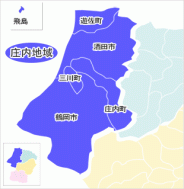

庄内地域の魅力
庄内地域は日本海に面し、出羽三山や酒田の港町、新鮮な海の幸など、自然と歴史、食が楽しめるエリアです。庄内米や農産物も全国的に評価されています。
庄内地域の地形
庄内地域は広大な庄内平野と日本海沿岸が特徴で、最上川が流れ、月山や鳥海山などの山々が周囲に広がっています。
名産品
観光名所
×

庄内地域は日本海に面し、出羽三山や酒田の港町、新鮮な海の幸など、自然と歴史、食が楽しめるエリアです。庄内米や農産物も全国的に評価されています。
庄内地域は広大な庄内平野と日本海沿岸が特徴で、最上川が流れ、月山や鳥海山などの山々が周囲に広がっています。